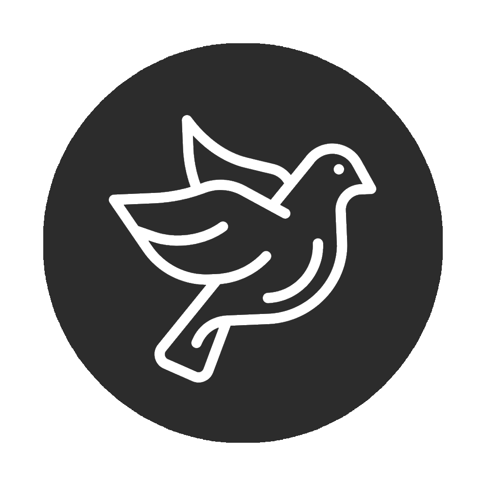
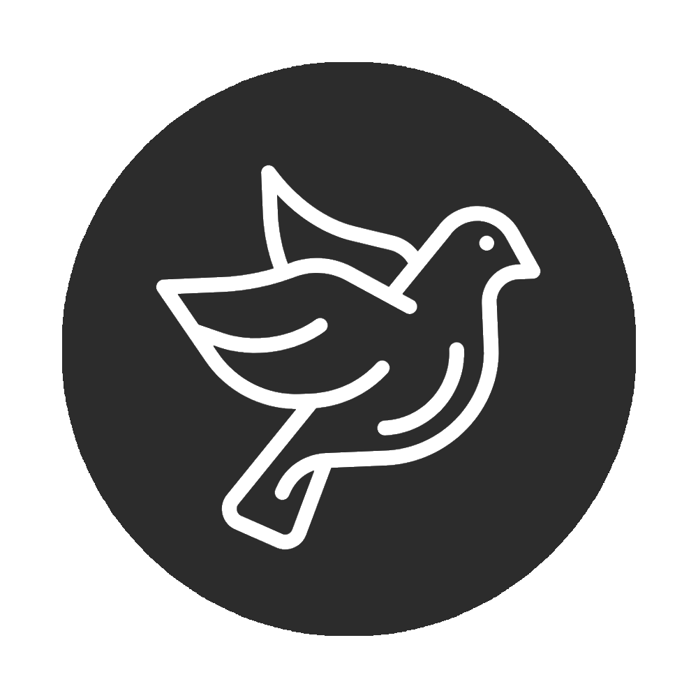

SER JOVEM. SER IGREJA
Data: 02/06/19 - Pedro Henrique
Como ser um jovem com propósito em meio a tantas pressões? Esta é uma pergunta que, constantemente, vem à mente dos jovens. Não há como negar que as pressões do mundo sobre a vida do jovem cristão aumentam a cada dia.
Perseverar até o fim deve ser o propósito de cada um. O jovem precisa ser estável espiritualmente falando, precisa fazer parte de uma geração radical que não se corrompe com o mundo.
Vivendo em comunidade, dividindo dificuldades, fazendo amizades sinceras e recebendo o mais essencial alimento, o espiritual, certamente é possível ver não apenas um jovem como também um adulto mais feliz. Pois quando o desenrolar da juventude acontece na igreja a consequência é um adulto mais seguro, maduro e pleno, capaz de adaptar-se melhor as dificuldades e perdas da vida. E isso no mundo em que vivemos conta muito.
SUBIR
 

Grupo de Jovens Ruah
Comunidade Jesus Operário
© 2019